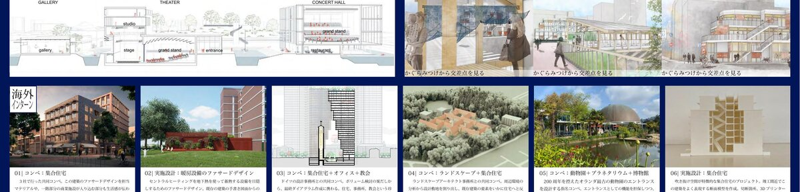

Funagare Toshi舟流都市
Water and City from Sotobori外濠から考える水と都市の向き合い方
A proposal to revive Sotobori as infrastructure, generating new flows in Tokyo through the restoration of its waterway.
外濠をインフラとして復活させることで、東京に新しい流れを生み出す卒業設計。
Special Jury Award · Design Review 70 · 卒,22 55選特別審査員賞 · デザインレビュー70選 · 卒,22 55選View project →詳細を見る →

Noren Mitsukeのれんみつけ
Gateway of Kagurazakaのれんを使った神楽坂の玄関口のデザイン
A gateway design for Kagurazaka using the noren motif, reconnecting the street's layered commercial history to its public face.
のれんをモチーフに、商業の街・神楽坂の玄関口を再デザインするコンペ提案。
Excellence Award + Kagurazaka Architecture Prize優秀賞 + 神楽坂建築賞View project →詳細を見る →

Channeling Culture Canal
Shanghai International Workshop上海国際ワークショップ
An international group project with Swiss, Danish, and Chinese collaborators, proposing the restoration of historical canals in Qingpu District, Shanghai.
スイス・デンマーク・中国の学生と行った国際グループワーク。上海・青浦区に歴史的運河を再生する提案。
View project →詳細を見る →
NL architects
Amsterdam, Netherlandsオランダ・アムステルダム
Worked on residential competitions, facade design, and construction documentation. Project details are confidential.
集合住宅コンペ、ファサードデザイン、実施設計などに従事。プロジェクト詳細は企業秘密につき非公開。
Categories: Competition / Construction / Facade担当：コンペ / 実施設計 / ファサード
Tsukuru, Tsunagaruつくる、つながる。
Elementary School as Community Coreものづくりがもたらすコミュニティ・コア
An elementary school design in Edogawa, Tokyo, weaving together a town-factory district and the school as a shared community core.
東京都江戸川区の町工場地帯に根ざした、ものづくりを媒介とするコミュニティの核としての小学校設計。
Excellent Work Award · Published in Department Journal学内優秀賞 · 学内誌掲載View project →詳細を見る →

Nagarete, Tamaruながれて、たまる。
A Large House Sharing Time and Space時間と空間を共有する大きな家
A collective housing proposal responding to post-COVID life, designing a large shared house along a culverted river in Tokyo.
アフターコロナを見据え、暗渠に沿って人々の流れと活動が重なる大きな共有住宅を提案。
Excellent Work Award学内優秀賞View project →詳細を見る →